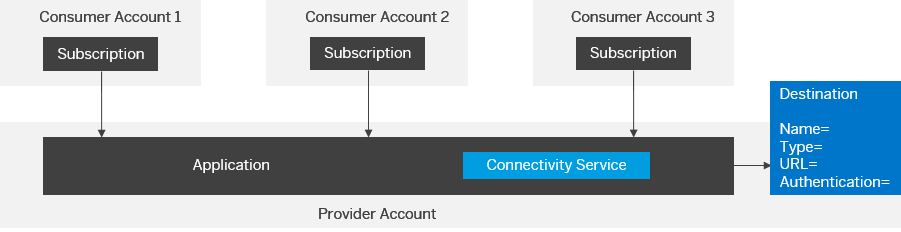

Applications that require connection to a remote service can use the connectivity service to configure HTTP or RFC endpoints. In a provider-managed application, such an endpoint can either be once defined by the application provider, or by each application consumer. If the application needs to use the same endpoint, independently from the current application consumer, the destination that contains the endpoint configuration is uploaded by the application provider. If the endpoint should be different for each application consumer, the destination shall be uploaded by each particular application consumer.
Destinations can be simultaneously configured on three levels: application, consumer account and subscription. This means it is possible to have one and the same destination on more than one configuration level. For more information, see Destinations
Destinations visibility according to the level:
When the application accesses the destination at runtime, the connectivity service tries to first lookup the requested destination in the consumer account on subscription level. If no destination is available there, it checks if the destination is available on the account level of the consumer account. If there is still no destination found, the connectivity service searches on application level of the provider account.
Consumer-Specific Destination
If an application consumer is not allowed to specify an endpoint for a provider application, the DestinationProvider=Application property can be set in the HTTP or RFC destination. In this case, the destination is always read from the provider application.
Provider-Specific Destination

This connectivity type is fully applicable when working with connectivity service 2.x.